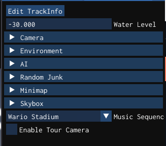
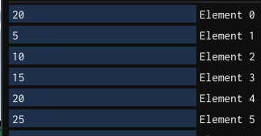
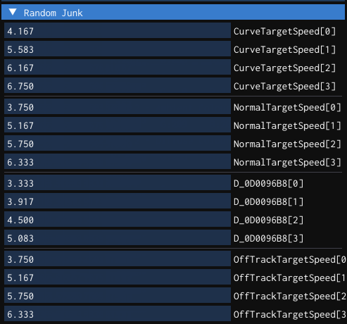

- Generated by
 1.9.8
1.9.8
|
SpaghettiKart
|
Track Props contains the track data that the modern C++ interface sends into the C game engine. This allows complete configuration of the track from lighting, skybox, and environment, to CPU pathing, minimap, and music.
The following settings are available. Most of these are straight forward.

Light 1 is unused. Use Light 2.
This allows adjusting how precise the CPUs steering is, and the separation between CPUs.

This section effects the speed of the CPUs. Whether they should slow down or speed up in corners, and how fast they should go when they are not on the track.
